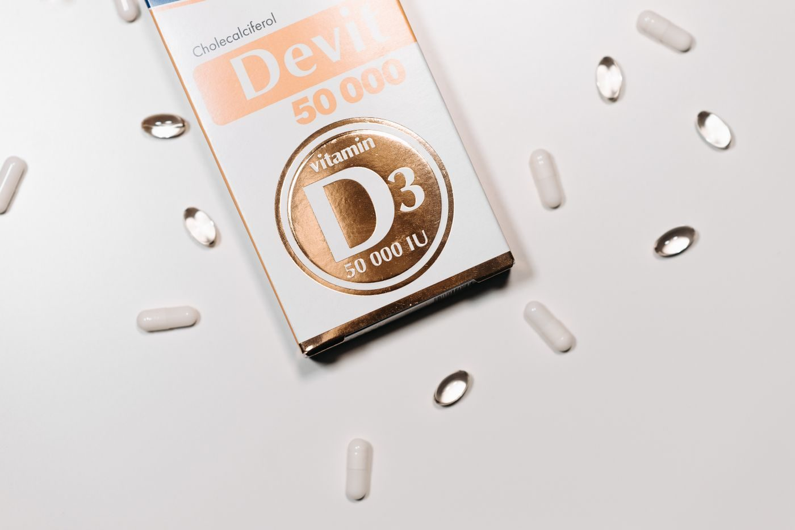

Cikk · D-vitamin
D-vitamin: mire való, kinek lehet fontos, és mit nem ígérhetünk
A D-vitamin a kalcium felszívódásához és a csontok mineralizációjához kell. Ez nem ugyanaz, mint hogy egy kapszula megelőzné a rákot vagy a szívbetegséget.

Mi a termék?
A D-vitamin zsírban oldódó tápanyag. Élelmiszerből, napfényből és étrend-kiegészítőből is származhat. A készítmények két fő formája a D2 (ergokalciferol) és a D3 (kolekalciferol). Mindkettő felszívódik a vékonybélben; a zsír a bélben segíti a felszívódást, de valamennyi D-vitamin zsír nélkül is felszívódik. A vérben a státuszt jellemzően a 25-hidroxi-D-vitamin szintjével mérik.
Jól alátámasztott Elősegíti a kalcium felszívódását a bélből, és megfelelő szérumkalcium- és foszfátszintet tart fenn a csontok mineralizációjához. Elegendő D-vitamin megelőzi a rachitist gyermekeknél és az osteomalaciát felnőtteknél. A csontok növekedéséhez és átépüléséhez is szükséges. Forrás: az amerikai NIH Office of Dietary Supplements szakmai összefoglalója.
Kinek szól?
Annak, akinél a hiány vagy a csont egészsége orvosi kérdés, nem mindenkinek automatikusan. Hosszú idejű D-vitamin- és kalciumhiánytól a csontok törékennyé válhatnak; ezt nevezik oszteoporózisnak. A hiány gyenge, fájdalmas izomzattal is járhat. A NIH fogyasztói lapja szerint idősebb felnőtteknél a D-vitamin és a kalcium együtt kismértékben növeli a csontok erősségét, de nem világos, hogy csökkenti-e az esés vagy a csonttörés kockázatát.
Korlátozott A pótlás és a törésmegelőzés kapcsolata tehát nem lezárt, még ott sem, ahol a csontok erősségére van adat. Egyéni adagot ez a magazin nem mond.
Hagyományos használat A csukamájolaj és a napoztatás régi gyakorlat. A napfény valóban forrás, de a hagyomány önmagában nem mondja meg, kinek mennyi pótlás kell, és a túlzott UV-expozíció bőrkárosodást okozhat. Erre külön perc- vagy dózisjavaslatot nem adunk.
Mit mond a kutatás?
A NIH fogyasztói lapja szerint mind a D2, mind a D3 emeli a vér D-vitamin-szintjét, a D3 azonban magasabbra és hosszabb időre emelheti, mint a D2. Zsírtartalmú étellel együtt érdemes bevenni, mert zsírban oldódik.
Egy 2012-es metaanalízis randomizált vizsgálatokat hasonlított össze. A D3 összességében jobban emelte a 25-hidroxi-D-vitamin szintjét, mint a D2 (P = 0,001). Bólus (nagyobb, ritkább) adagnál a különbség megmaradt (P = 0,0002), napi adagolásnál ebben az elemzésben elveszett. A szerzők további kutatást kértek.
Egy 2017-es, 12 hetes randomizált vizsgálatban 335 dél-ázsiai és fehér európai nő napi 15 mikrogramm D2-t vagy D3-at kapott lében vagy kekszben, télen. A D3 hatékonyabban emelte a szérum 25-hidroxi-D-vitamin szintjét, mint ugyanekkora napi D2-adag.
Valószínű, korlátozott A D3 gyakran jobban emeli a mérhető vérszintet. Ez a markerre vonatkozik, nem arra, hogy a D3 betegséget előzne meg. A napi adag különbsége nem minden összesítésben ugyanaz: a 2012-es metaanalízis napi adagnál nem látta, a 2017-es vizsgálat igen.
A VITAL vizsgálat ezt a betegségkérdést nézte, nem a két formát. 25 871 amerikai férfi (50 éves vagy idősebb) és nő (55 éves vagy idősebb) vett részt, a belépéskor daganatos betegség (a nem melanoma bőrrák kivételével) és szív-érrendszeri betegség nélkül. Napi 2000 NE D3-at kaptak placebóval szemben, medián 5,3 évig. A D-vitamin nem csökkentette az elsődleges végpontokat. Invazív rák: 793 eset a D-vitamin-csoportban, 824 a placebóban (kockázati arány 0,96; 95%-os megbízhatósági tartomány 0,88–1,06). Súlyos szív-érrendszeri esemény: 396 szemben 409 eseménnyel (kockázati arány 0,97; 0,85–1,12). A szerzők következtetése: a pótlás nem csökkentette az invazív rák előfordulását és a szív-érrendszeri eseményeket.
Nem bizonyított Az az állítás, hogy a D-vitamin-pótlás az általános, ilyen betegségben korábban nem érintett felnőtteknél megelőzi a rákot vagy a súlyos szív-érrendszeri eseményt, ebben a nagy vizsgálatban nem igazolódott.
A rák miatti halálozás kockázati aránya 0,83 volt (0,67–1,02), ez az elsődleges követés egészében nem volt statisztikailag egyértelmű. Egy utólagos elemzés, amely kihagyta a követés első két évét, alacsonyabb rákhalálozást jelzett. A közlemény ezt óvatosan kezeli, mert nem ez volt az előre rögzített fő kérdés, és többszörös összehasonlításra nem korrigáltak. Ebből nem lesz az az állítás, hogy a D-vitamin menti meg a rákos beteget.
Mit nem állítunk
Nem állítjuk, hogy a D-vitamin megelőzi a rákot, a szívinfarktust vagy a stroke-ot.
Nem mondunk napi adagot, és nem értelmezünk véreredményt.
Nem állítjuk, hogy a D3 és a D2 közötti vérszintkülönbség betegséget előz meg.
A fenti számok az amerikai NIH összefoglalójából és a VITAL közleményéből valók. Nem magyar kezelési előírások.
Források
- NIH Office of Dietary Supplements. Vitamin D — Health Professional Fact Sheet. ods.od.nih.gov
- NIH Office of Dietary Supplements. Vitamin D — Consumer. ods.od.nih.gov
- Tripkovic L, és mtsai. Comparison of vitamin D2 and vitamin D3 supplementation in raising serum 25-hydroxyvitamin D status: a systematic review and meta-analysis. Am J Clin Nutr. 2012. PMID 22552031. PubMed
- Tripkovic L, és mtsai. Daily supplementation with 15 μg vitamin D2 compared with vitamin D3… Am J Clin Nutr. 2017. PMID 28679555. PubMed
- Manson JE, és mtsai. Vitamin D Supplements and Prevention of Cancer and Cardiovascular Disease. N Engl J Med. 2019. PMID 30415629. PMC6425757 · NEJM